|
Excelsior - Roda JC (0-1) 19 augustus 2006
|
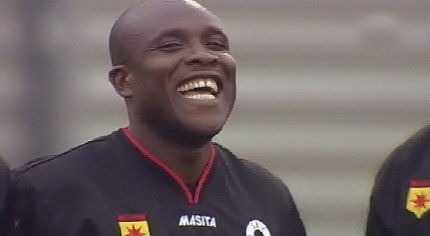
Christian Gyan, de huurling van Feyenoord. Terug op Woudestein na lange
tijd. 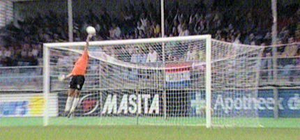
De eerste grote kans is voor Van Tornhout die zijn lob op het nippertje door
doelman Zwarthoed overgetikt ziet.
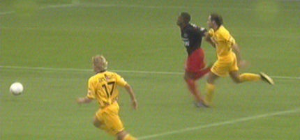
Slory loopt Bodor eruit. Zijn schot wordt tegengehouden door Kujovic.
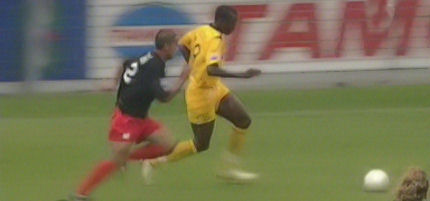
Aan de andere kant loopt Cissé zijn tegenstander eruit.
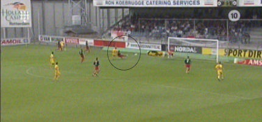
Zijn pass lijkt van Tornhout te bereiken maar het is uitgerekend Gyan die in
een poging de bal weg te werken een eigen doelpunt maakt: 0-1, (10').
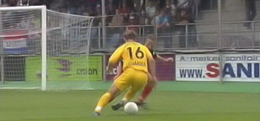
Uitstekend dribbel- en passeerwerk van Vandamme. De zeer beweeglijke
Belg bereikt de kop van Bodor...
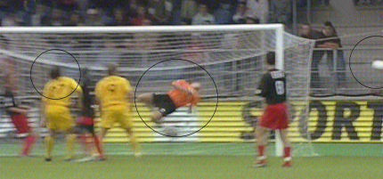
...wiens kopbal door Zwarthoed tot corner verwerkt wordt.
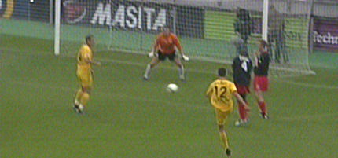
Schot van De Fauw dat op de paal belandt.
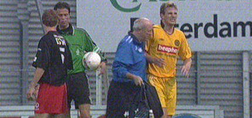
Van Tornhout raakt geblesseerd en moet eruit.
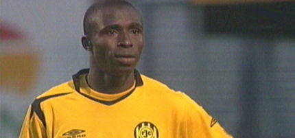
Hij wordt vervangen door Sonko.
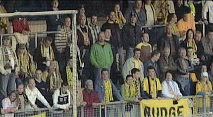
Een gedeelte van de ongeveer 200 Rodasupporters.
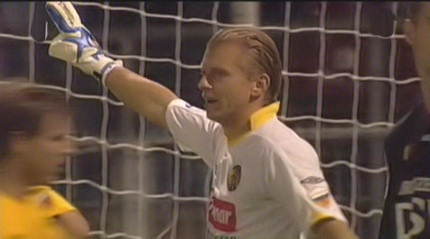
Vanaf de 60e min. begint Roda te pielen en krijgt Excelsior steeds meer vat
op de wedstrijd. Met name Slory krijgt een aantal aardige kansen. Kujovic
keept echter een prima partij.
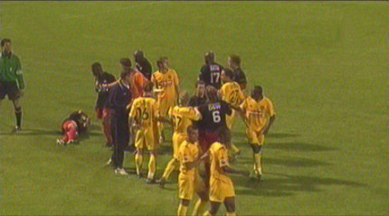
In de laatste 10 min. is er zowaar nog een opstootje.
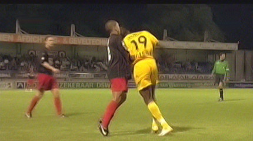
Het is een gevolg van deze knuffel die Cissé aan Bandjar geeft. Opwinding
om niks. 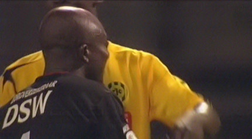
Erg sneu voor Gyan, maar Roda pakt de drie punten. Klik op de pijltjes voor een fotoverslag van Excelsiorzijde
>>>
© Koempels Pleasure Dome
|